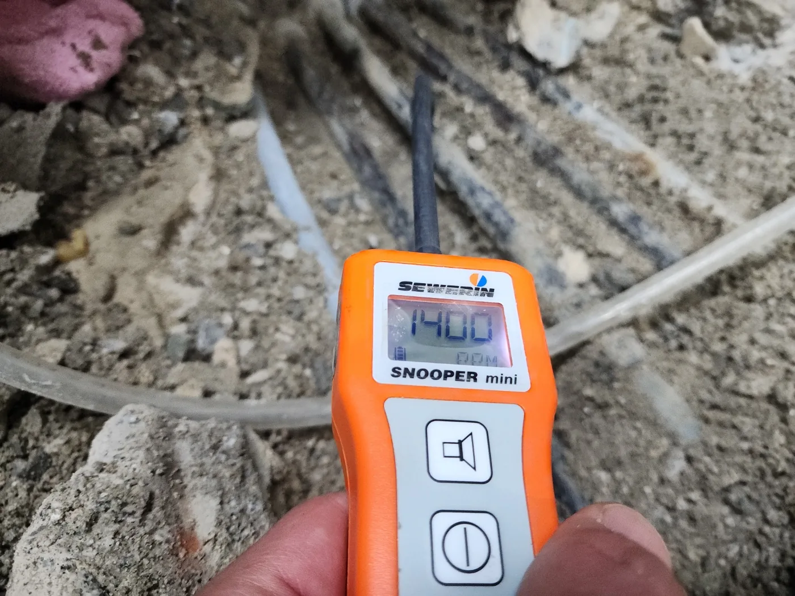
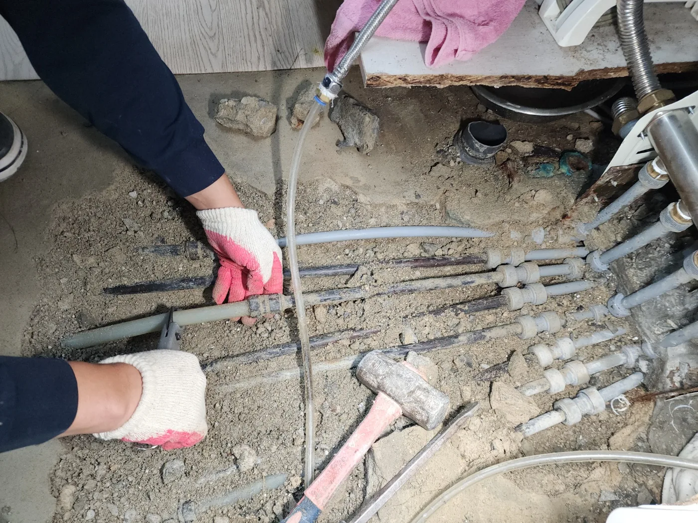
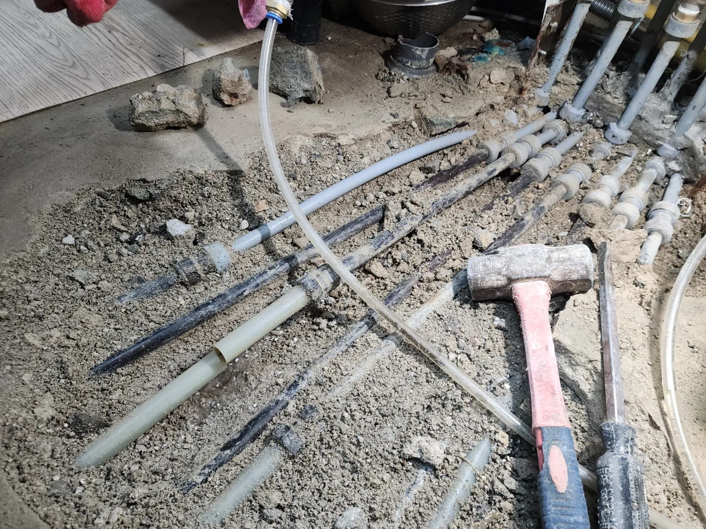
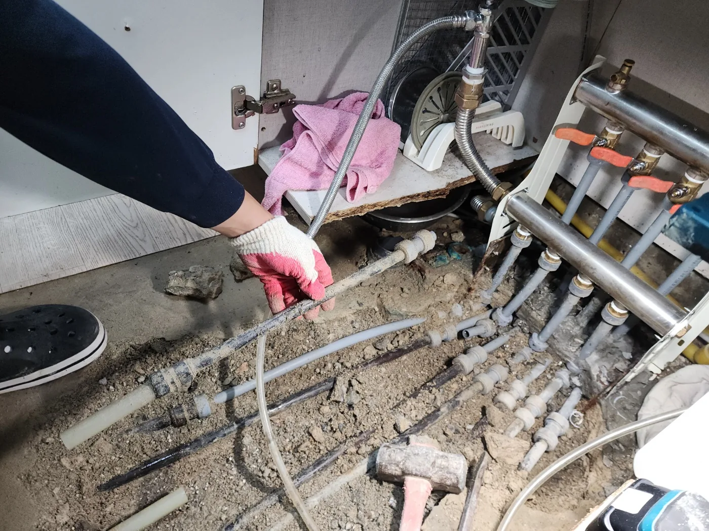

광주광산구
광주광산구누수탐지 타업체 실패 후 난방배관 미세누수 위치를 찾아 보수
광주 광산구 실제 누수탐지 사례. 압력시험, 가스탐지, 청음, 열화상으로 누수 위치를 좁히고 배관 보수 후 2차 검사를 진행했습니다.
광주광산구누수탐지 타업체 실패 후 난방배관 미세누수 위치를 찾아 보수 자세히 보기수도배관·난방배관 누수를 압력시험, 가스탐지, 청음, 열화상으로 진단하고 보수한 실제 현장입니다.
다른 분야 사례를 섞지 않고 누수탐지 작업만 모았습니다.
광주 광산구 실제 누수탐지 사례. 압력시험, 가스탐지, 청음, 열화상으로 누수 위치를 좁히고 배관 보수 후 2차 검사를 진행했습니다.
광주광산구누수탐지 타업체 실패 후 난방배관 미세누수 위치를 찾아 보수 자세히 보기
광주 남구 실제 누수탐지 사례. 압력시험, 가스탐지, 청음, 열화상으로 누수 위치를 좁히고 배관 보수 후 2차 검사를 진행했습니다.
광주남구누수탐지 노후 아파트 난방배관 누수, 최소 굴착으로 원인 해결 자세히 보기
광주 서구 실제 누수탐지 사례. 압력시험, 가스탐지, 청음, 열화상으로 누수 위치를 좁히고 배관 보수 후 2차 검사를 진행했습니다.
광주서구누수탐지 두 차례 실패한 아파트 난방배관 미세누수 정밀 진단 자세히 보기
순천 실제 누수탐지 사례. 압력시험, 가스탐지, 청음, 열화상으로 누수 위치를 좁히고 배관 보수 후 2차 검사를 진행했습니다.
순천누수탐지 아파트 아래층 물샘, 압력시험과 복합 탐지로 위치 확인 자세히 보기제공된 현장 기록과 사진을 바탕으로 진단·보수·재검증 과정을 정리했습니다.

상가 수도요금이 전달보다 약 50톤 증가해 타 업체 탐지 실패 후 계량기 주변 누수 지점을 가스·청음 검사로 확인한 현장입니다.
자세히 보기 →
아랫집 작은방 천장 누수의 원인을 유선상담과 계량기·열화상·가스·청음 검사로 좁혀 노후 PPC 온수배관을 PB 부속으로 교체한 사례입니다.
자세히 보기 →
주택 외벽으로 물이 스며나오고 수도요금이 증가한 현장에서 열화상·가스·청음 검사와 배관내시경으로 불량 난방배관 범위를 확인했습니다.
자세히 보기 →
아파트 아래층 싱크대 천장과 벽면 피해가 발생한 현장에서 가스·청음·열화상으로 냉수배관 누수 위치를 찾고 싱크대 하부 배관을 교체했습니다.
자세히 보기 →
아파트 12층에서 아래층 거실 천장으로 누수가 발생해 열화상·가스·청음 검사로 화장실 문 앞 난방배관 누수 지점을 확인했습니다.
자세히 보기 →
아래층 보일러실과 안방 천장 누수 현장에서 열화상·가스·청음 검사를 거쳐 노후 PPC 온수배관을 PB 부속으로 교체했습니다.
자세히 보기 →
주택 외벽 물샘과 수도요금 증가 현장에서 난방배관 누수 위치를 찾고 배관내시경으로 불량 범위를 확인해 약 4m를 교체했습니다.
자세히 보기 →
아래층 화장실 천장 누수 현장에서 수도배관 검사를 통해 배관 누수가 아님을 확인하고 배수구 주변 부분 방수로 해결한 사례입니다.
자세히 보기 →
아파트 아래층 거실 천장 누수 현장에서 열화상·가스·청음 검사를 거쳐 화장실 문 앞 난방배관 누수 지점을 확인했습니다.
자세히 보기 →
2층 주택에서 아래층 방과 거실 천장으로 누수가 발생해 열화상·가스·청음 검사 후 매립된 난방분배기를 노출형으로 교체했습니다.
자세히 보기 →
주택 거실 장판 아래로 물이 스며들고 수도요금이 증가한 현장에서 가스·청음·열화상 검사로 냉수배관 누수를 찾았습니다.
자세히 보기 →
주택 거실 장판 아래 물샘과 수도요금 증가 현장에서 냉수배관 누수 위치를 찾고 전후 배관을 내시경으로 확인한 뒤 교체했습니다.
자세히 보기 →관련 시공사례와 FAQ/PAT 페이지를 연결할 위치입니다.
아래 사진은 프로젝트에 보관된 실제 작업 이미지 중 페이지의 지역과 서비스 분류가 일치하는 자료를 우선 연결한 것입니다.




누수탐지와 관련된 서비스·증상·장비·사례만 모았습니다.
배수가 느려지거나 역류가 반복된다면 배관 내부의 기름 슬러지, 이물질, 석회 등을 배관내시경으로 확인한 뒤 상황에 맞는 장비로 작업합니다.
변기 막힘은 휴지, 물티슈, 석회, 공용배관 문제 등 원인을 먼저 확인한 뒤 적합한 장비로 안전하게 작업을 진행합니다.
배관 상태를 확인합니다.
메인 배관을 점검합니다.
내시경 진단 후 작업합니다.